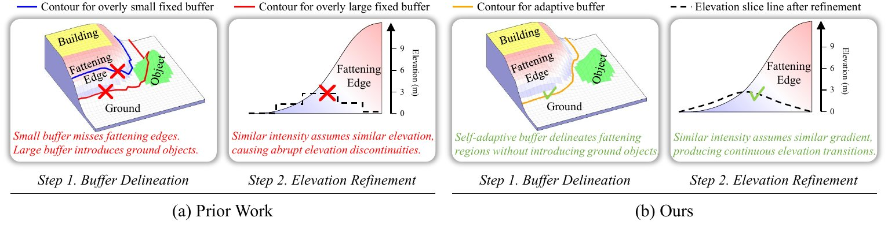
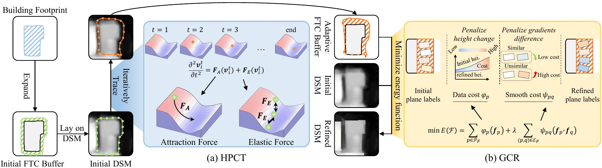
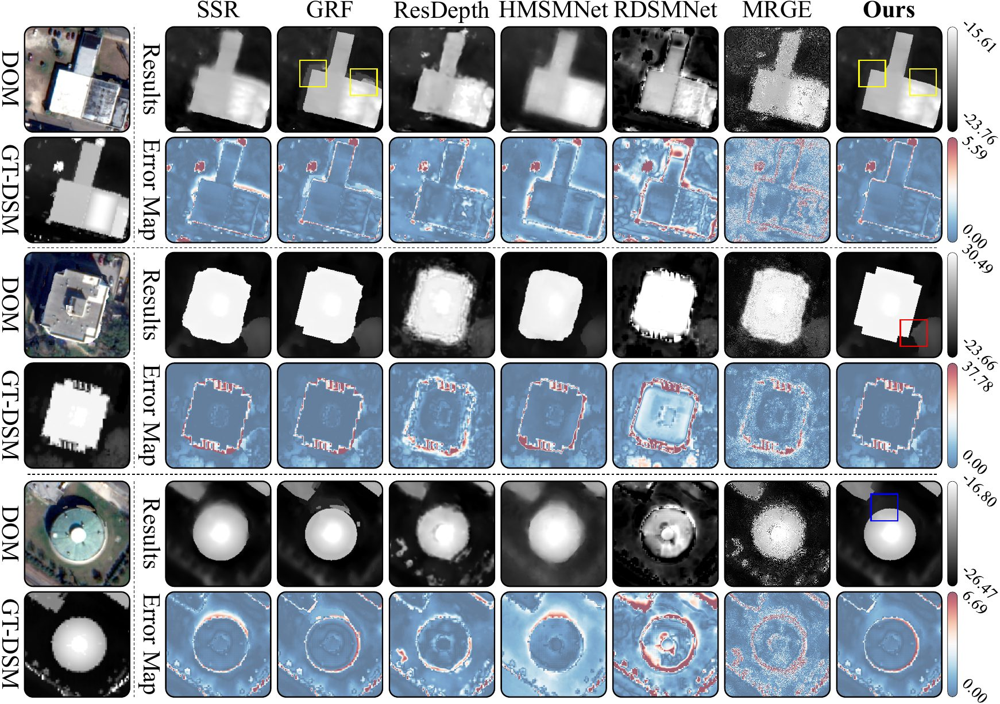
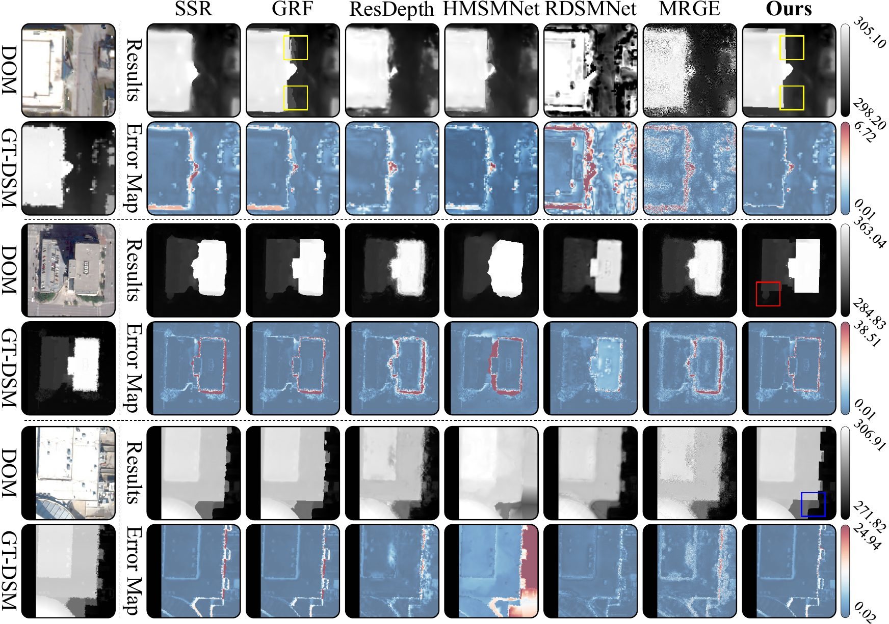
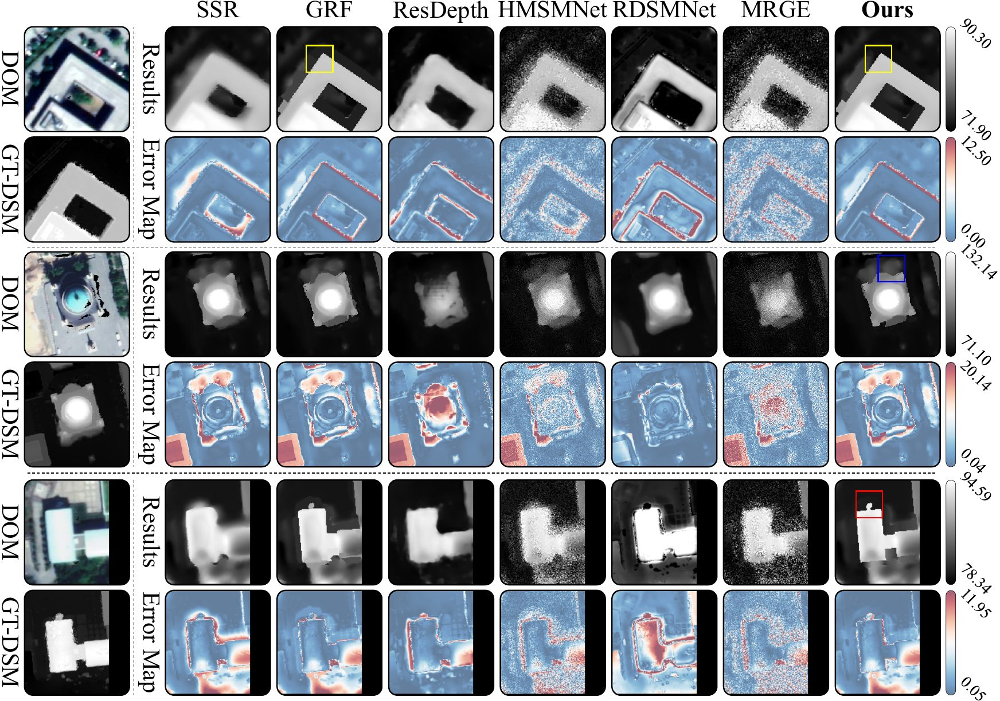
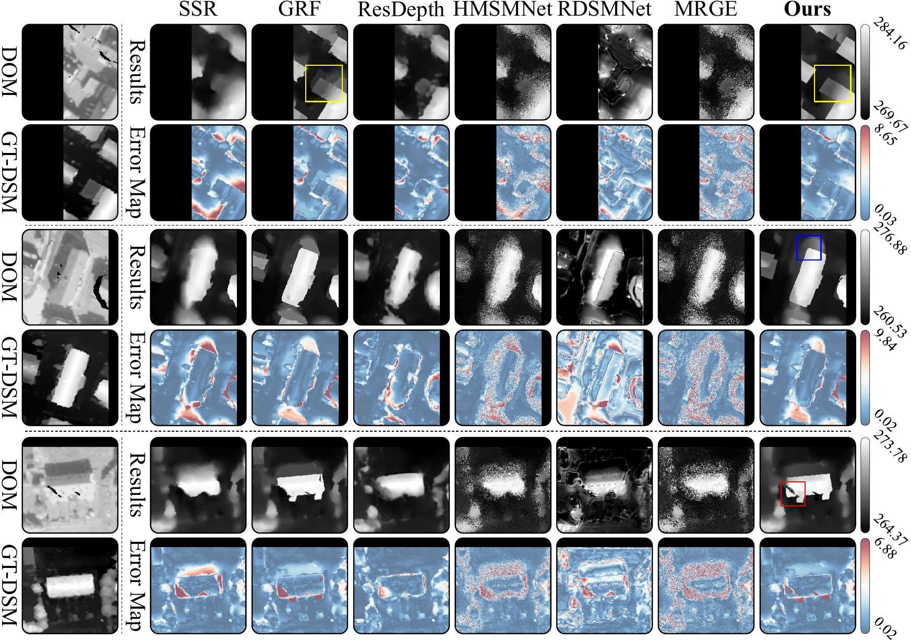
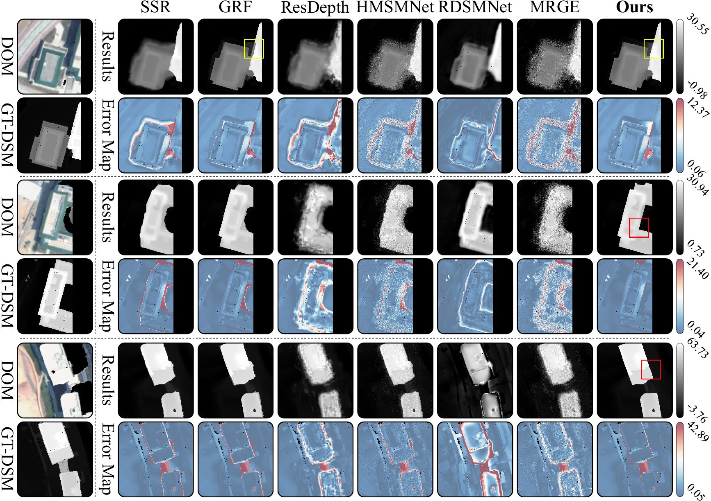

Motivation of SRAD. Existing fixed-buffer DSM post-refinement methods may miss part of the fattening edge when the buffer is too small, or damage nearby ground objects when the buffer is too large. SRAD instead traces adaptive contours from the height structure and refines the selected edge regions with smooth height transitions.
Satellite photogrammetry provides large-scale Digital Surface Models (DSMs) for urban applications, but building boundaries in satellite DSMs are often blurred and expanded by matching smoothness constraints. These fattening building edges cause large local height errors and degrade downstream 3D building modeling.
Existing dense matching and learning-based refinement methods usually optimize complete disparity maps or complete DSMs, so the narrow boundary regions are not explicitly corrected. DSM post-refinement is more direct, but fixed buffers may either miss wide fattening edges or include nearby ground objects, while height-similarity constraints may introduce abrupt height discontinuities.
To address these limitations, we propose SRAD, a smooth refinement framework with adaptive delineation for fattening building edges. SRAD traces adaptive buffers from building footprints and DSM heights, then refines only the selected edge regions with gradient-consistent constraints. Experiments on five regions show that SRAD better delineates fattening edges and produces smoother height transitions around building boundaries.

SRAD separates where to refine from how to refine. Height Potential Contour Tracing (HPCT) uses the building footprint as an initial contour prior and treats the DSM height as a potential field, producing adaptive interior and exterior buffers that cover local fattening edges while avoiding nearby objects.
Gradient Consistent Refinement (GCR) then updates the selected buffers with confidence-weighted data terms and gradient consistency constraints. The refined heights are finally merged back into the initial DSM, preserving reliable regions while improving the uncertain building-edge areas.
JAX 161 · JAX 168 · JAX 264
OMA 203 · OMA 251 · OMA 288
POD 211 · POD 415 · POD 713
VAH 007 · VAH 027 · VAH 038
ZHU 049 · ZHU 057 · ZHU 068

Jacksonville

Omaha

Potsdam

Vaihingen

Zhuhai
| Model | MAE | RMSE | PAG 1m | PAG 2m |
|---|---|---|---|---|
| SSR | 2.01 | 3.98 | 39.59 | 63.92 |
| GRF | 1.67 | 3.41 | 46.42 | 69.03 |
| ResDepth | 1.92 | 3.47 | 42.00 | 65.77 |
| HMSMNet | 2.63 | 4.59 | 30.14 | 56.03 |
| RDSMNet | 3.05 | 5.43 | 24.50 | 50.70 |
| MRGE | 2.29 | 4.05 | 35.36 | 60.52 |
| SRAD (Ours) | 1.48 | 3.01 | 50.89 | 72.16 |
| w.r.t. SOTA | -0.19 | -0.40 | +4.47 | +3.13 |
| Model | MAE | RMSE | PAG 1m | PAG 2m |
|---|---|---|---|---|
| SSR | 1.53 | 2.84 | 50.31 | 71.77 |
| GRF | 1.41 | 2.41 | 53.74 | 74.09 |
| ResDepth | 1.16 | 2.22 | 59.65 | 80.54 |
| HMSMNet | 1.95 | 3.26 | 41.92 | 65.71 |
| RDSMNet | 2.31 | 3.94 | 35.26 | 60.45 |
| MRGE | 1.65 | 2.79 | 48.14 | 70.25 |
| SRAD (Ours) | 1.02 | 1.88 | 63.88 | 77.92 |
| w.r.t. SOTA | -0.14 | -0.34 | +4.23 | -2.62 |
| Model | MAE | RMSE | PAG 1m | PAG 2m |
|---|---|---|---|---|
| SSR | 2.59 | 4.09 | 31.35 | 57.11 |
| GRF | 2.29 | 3.71 | 35.93 | 60.99 |
| ResDepth | 2.18 | 3.76 | 38.17 | 62.41 |
| HMSMNet | 2.97 | 4.83 | 26.03 | 52.20 |
| RDSMNet | 3.28 | 5.44 | 22.34 | 48.49 |
| MRGE | 2.50 | 4.10 | 32.47 | 58.09 |
| SRAD (Ours) | 2.13 | 3.62 | 37.67 | 62.80 |
| w.r.t. SOTA | -0.05 | -0.09 | -0.50 | +0.39 |
| Model | MAE | RMSE | PAG 1m | PAG 2m |
|---|---|---|---|---|
| SSR | 1.76 | 2.79 | 46.13 | 68.82 |
| GRF | 1.62 | 2.55 | 49.25 | 71.03 |
| ResDepth | 1.52 | 2.44 | 51.45 | 72.54 |
| HMSMNet | 2.61 | 4.32 | 30.77 | 56.59 |
| RDSMNet | 3.06 | 5.17 | 24.71 | 50.91 |
| MRGE | 2.06 | 3.38 | 39.93 | 64.19 |
| SRAD (Ours) | 1.34 | 2.17 | 55.82 | 75.46 |
| w.r.t. SOTA | -0.18 | -0.27 | +4.37 | +2.92 |
| Model | MAE | RMSE | PAG 1m | PAG 2m |
|---|---|---|---|---|
| SSR | 2.55 | 2.95 | 33.62 | 59.07 |
| GRF | 2.05 | 2.62 | 41.54 | 65.42 |
| ResDepth | 2.46 | 2.75 | 35.16 | 60.36 |
| HMSMNet | 2.88 | 3.94 | 28.15 | 54.21 |
| RDSMNet | 3.27 | 4.56 | 23.39 | 49.58 |
| MRGE | 2.69 | 3.40 | 31.14 | 56.92 |
| SRAD (Ours) | 1.46 | 2.24 | 53.13 | 73.68 |
| w.r.t. SOTA | -0.59 | -0.38 | +11.59 | +8.26 |
Metrics are computed over adaptive buffers. Lower MAE/RMSE and higher PAG are better.